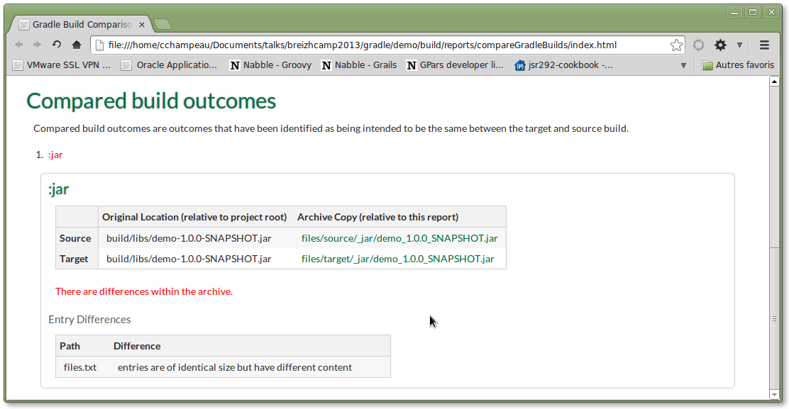

Les androïdes rêvent-ils de Gradle ?
Breizhcamp
Cédric Champeau, SpringSource
14 Juin 2013
Qui suis-je ?
Passé : contributeur Groovy
- Bugfixes
- Modules: @Bytecode AST xform, GFreeMarker
- Core: compilation customizers, @xInterrupt, ...
- Utilisation de Groovy comme DSL pour le TALN
Aujourd'hui: Core Groovy committer
- Compilation configuration
- Static type checking
- Static compilation
- Bugfixing...
Social
Do Androids Dream of Electric Sheep?
Roman de Philip K. Dick
Ecrit en 1976
Inspiration pour Blade Runner
Gradle récemment adopté par Google comme système de build par défaut des applications Android
Gradle
je ne parlerai (presque) pas de...
Maven...
Ant...
Makefile...
Sbt...
Qu'est-ce que Gradle ?
- Un outil de build pour la JVM
- Declaratif
- Convention over configuration
- Dependency management
- Scriptable
- Concis
Qu'est-ce que Gradle ?
- Système de gestion de dépendances maison (avant: Ivy)
- API riche et ouverte
- Permettre de gérer ses propres conventions
- L'outil de build ne doit pas s'imposer !
Make the impossible possible, make the possible easy and make the easy elegant
(inspired by Moshe Feldenkrais)
Quelques citations
Android has a new Gradle-based build system that makes it easier to accomplish tasks that were previously hard or impossible to do.
Alex Ruiz, Google
it is really just so refreshing to think "how am I going to solve this?" as opposed to "what are the viable options my build tool is going to leave me to achieve this?"
Steve Ebersole, Hibernate
Gradle has many innovative features that make it a pleasure to use, like an incremental build system [...], minimalistic command-line output [...], and a concise syntax that makes it possible to build a large codebase like the Spring Framework with a remarkably small and readable build script.
Chris Beams, SpringSource
Les défis
- Builds modulaires
- Enterprise class builds
- Continous delivery
- Multi-projet
- Parallélisme
Compiler une librairie Java
Compiler un projet Android
Définition d'un scope personalisé
Gestion des variantes (1/2)
Gestion des variantes (2/2)
arm-free-debug.apk
x86-free-debug.apk
arm-paid-debug.apk
x86-paid-debug.apk
arm-free-release.apk
x86-free-release.apk
arm-paid-release.apk
x86-paid-release.apk
Un même projet permet de générer de multiples artéfacts !
Dites adieux aux profils inmaintenables et activés à la demande
Sélection de tâches
Un projet Gradle est inspectable
Exemple: trouver toutes les tâches qui génèrent un jar
Builds incrémentales
Point fort de Gradle!
L'API permet de définir ses propres tâches incrémentales
Au revoir les clean build systématiques !
Le Gradle wrapper (1/2)
Problématique
Laurent lance la build avec Gradle 1.2 alors que les tests ont été faits avec Gradle 1.6
Mises à jour de Gradle sur le CI ?
Réponse: le Gradle wrapper
Au lieu de
gradle build
On écrit
./gradlew build
Le Gradle wrapper (2/2)
Qu'est ce que ça fait ?
- Télécharge automatiquement Gradle
- Fichier de configuration pour la version
- Utilisable sur un CI!
On doit toujours utiliser le wrapper !
Bootstraping possible
gradle setupWrapper
Comparaison de builds
Eviter les surprises de migration

Gradle et le multi-projet
Déclaratif
settings.gradle
build.gradle // fichier principal
settings.gradle // déclaration des sous-projets
bzh-core
|----- build.gradle // fichier de build spécifique au sous-module
bzh-xml
|----- build.gradle // fichier de build spécifique au sous-module
bzh-json
|----- build.gradle // fichier de build spécifique au sous-module
Gradle et le multi-projet
Dépendances entre projets
Résolution des dépendances
- Possible de compiler depuis un sous-projet
- Compilation "intelligente" (up-to-date checking)
Compiler en parallèle
gradle --parallel build
C'est gratuit ! En prévision: distribution de build sur le cloud
Rapports de build
Plugin dédié à l'inspection de build
Tâches supplémentaires
- dependencyReport: rapport des dépendances
- propertyReport: rapport des propriétés du projet
- taskReport: rapport des tâches du projet
- projectReport: tous les rapports
Rapports de build: d'où vient cette dépendance ?
Problème commun: mais qui me ramène cette p... de dépendance ?
Avec Gradle:
Publier sur un repo Maven
Plugin "maven"
Possibilités nombreuses
- Personalisation du pom.xml
- Génération de multiples pom.xml
- Mapping de dépendances automatique
- ...
Dernier exemple pour la route
Gestion fine des dépendances
Conclusion
- DSL puissant
- déclaratif
- impératif au besoin
- contrôle fin du cycle de vie, des tâches, ...
- Communauté grandissante
- Open Source
- Documentation exhaustive
- Ne demande qu'à être adopté !
Questions
 ←
→
←
→
/
#